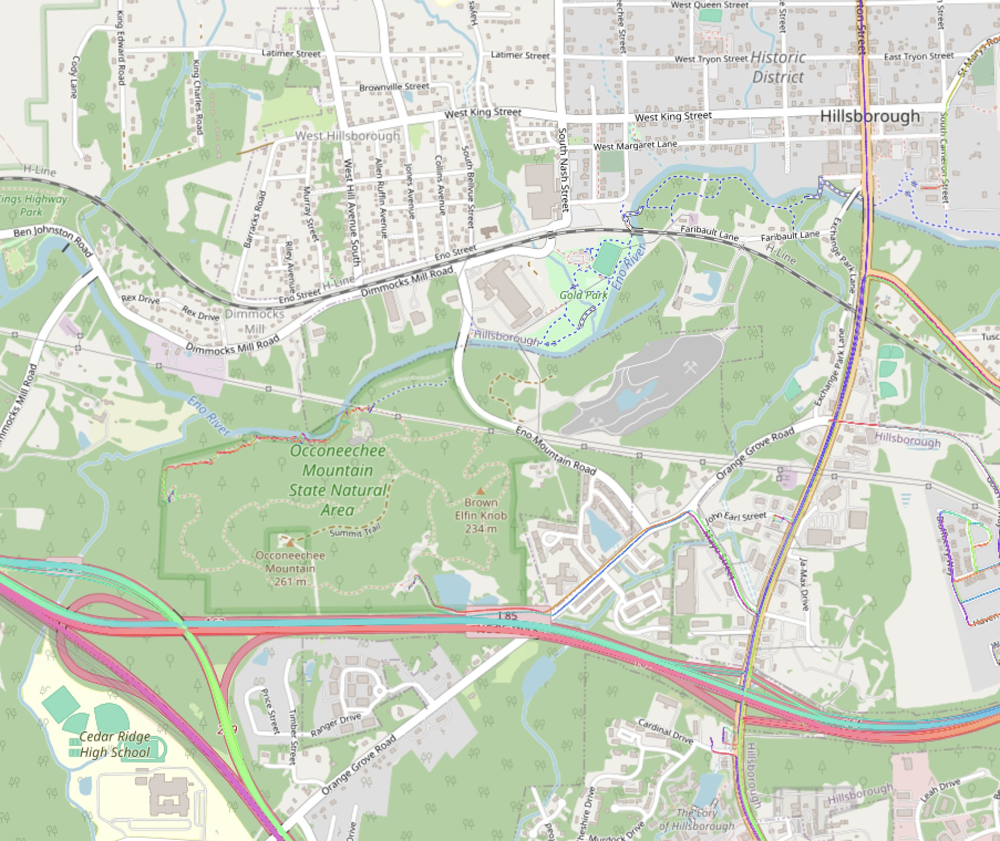

Show the code
knitr::include_graphics(here("images/occoneechee-mt-osm.jpg"))

Source: OpenStreetMap https://www.openstreetmap.org/relation/9742275
The highest point in Orange County, North Carolina is at the top of Occoneechee Mountain, just south of Hillsboro, the county seat. The mountain is 262 m (867 ft) above sea level, rising 350 feet from the Eno River, which flows along the northern border of the small Occoneechee Mountain NC State Natural Area. The sound of traffic on Interstate 85 follows you as your trail cuts through the trees on its way up the little mountain, and if you hope to ascend through the trees to enjoy the vista, you will be disappointed if the leaves are in. But there is a forestry and radio tower at the top that offers you some sense of having arrived somewhere, and the walk will do you good.
knitr::include_graphics(here("images/occoneechee-mt-osm.jpg"))In 1933, in the depths of the Depression, the U.S. Coast & Geodetic Survey (precursor to the NGS), placed survey triangulation mark FY3210 near the top of Occoneechee Mountain. How do we know? Because each mark has its own data sheet, and a datasheet tells a story.
PROGRAM = datasheet95, VERSION = 8.12.5.17
Starting Datasheet Retrieval...
1 National Geodetic Survey, Retrieval Date = FEBRUARY 16, 2024
FY3210 ***********************************************************************
FY3210 DESIGNATION - HILLSBORO
FY3210 PID - FY3210
FY3210 STATE/COUNTY- NC/ORANGE
FY3210 COUNTRY - US
FY3210 USGS QUAD - HILLSBOROUGH (2019)
FY3210
FY3210 *CURRENT SURVEY CONTROL
FY3210 ______________________________________________________________________
FY3210* NAD 83(2001) POSITION- 36 03 42.56888(N) 079 07 18.55999(W) ADJUSTED
FY3210* NAVD 88 ORTHO HEIGHT - 262. (meters) 860. (feet) SCALED
FY3210 ______________________________________________________________________The USGS QUAD is the name of the map quadrangle published by the U.S. Geological Survey. The Hillsboro (2019) 7.5 minute (1:24,000) quadrangle is here [115 MB PDF].
The CURRENT SURVEY CONTROL data include the latest location and elevation details and should be considered authoritative.
The next row is horizontal location. The latitude and longitude are based on NAD 83(2001), the North American Datum1 of 1983, wich the standard in use by the USGS today. The horizontal position is expressed in degrees, minutes, seconds in the North and West directions, latitude and longitude respectively. West is relative to the prime meridian at Greenwich, England). You can find Occoneechee Mountain on OpenStreetMap by searching for Occoneechee Mountain or latitude and longitude: 36°03’42.6”N 79°07’18.6”W (or their decimal equivalent: 36.06182, -79.12182).
NAVD 88 is the North American Vertical Datum of 1988, also the current standard. The orthographic height (“ortho height”) is defined relative to the datum. FY3210 is 262 meters (about 860 ft) above sea level.
I will be showing maps that include Orange, Durham, Wake, and Chatham Counties. Orange, Durham and Wake include the universities at the three points of the “triangle” that inspired the creation of Research Triangle Park. Chatham is a high-growth county from which some triangle workers commute. These counties are in the North Carolina Piedmont and above the fall line.2
For more about these counties and North Carolina in general, see North Carolina trends: geography, population, income, and education, which I completed in April 2023.
# adjust some labels up or down from county centroids to keep text from overlapping
offset <- 0.05 # degrees
nc_counties_centroids_adj <- nc_counties %>%
mutate(
cent = st_centroid(geometry),
needs_offset = 0,
y_trans = 0
) |>
mutate(
needs_offset = case_when(
county %in% c("Orange") ~ 1.5,
county %in% c("Durham") ~ -0.6,
TRUE ~ 0
),
y_trans = offset * needs_offset
) %>%
mutate(
trans = map2(0, y_trans, ~ st_point(c(.x, .y))),
cent_new = cent + trans
) %>%
st_set_geometry(.$cent_new) |>
st_set_crs(prj) |>
select(-c(cent, needs_offset, y_trans, trans, cent_new))
ggplot() +
geom_sf(data = nc_counties_all_tigris, color = "grey80",
fill = NA, linewidth = 0.2) +
geom_sf(data = nc_counties, color="black",
fill = "firebrick", alpha = 0.25, size = 0.25) +
geom_sf_text(data = nc_counties_centroids_adj,
aes(label = county),
size = 4) +
geom_sf(data = st_union(nc_counties_all_tigris), color="black",
fill = NA) +
labs(
title = "Selected counties",
x = NULL,
y = NULL,
caption = my_caption
)Occoneechee Mountain is the highest elevation in these four counties. Figure 1.3 presents some of the highest and lowest points of elevation in these counties. Where multiple marks are close to each other I show only one.3
min_dist_between_m <- 6000
### Heighest points
marks_for_plot_tmp <- nc_marks_counties |>
select(county, pid, ortho_ht, geometry) |>
filter(county %in% c("Orange", "Chatham", "Durham", "Wake")) |>
slice_max(order_by = ortho_ht, n = 20) |>
arrange(desc(ortho_ht))
dist_matrix <- drop_units(as.matrix(st_distance(marks_for_plot_tmp, marks_for_plot_tmp)))
dist_matrix[dist_matrix < min_dist_between_m] <- 0
diag(dist_matrix) <- -1
to_del <- logical(length(dist_matrix))
dim(to_del) <- c(nrow(dist_matrix), ncol(dist_matrix))
for(i in 1:ncol(dist_matrix)) {
#writeLines(paste0("i: ", i))
found_diag <- FALSE
for(j in 1:nrow(dist_matrix)) {
#writeLines(paste0("i,j: ", i, ", ", j))
if(!found_diag & dist_matrix[i, j] != -1) {
#writeLines(paste0("nope: ", i, ", ", j))
} else
if(dist_matrix[i, j] == -1) {
found_diag <- TRUE
#writeLines(paste0("diag: ", i, ", ", j))
} else {
#writeLines(paste0("post-diag: ", i, ", ", j))
to_del[i, j] <- (dist_matrix[i, j] == 0)
}
}
}
redundant <- colSums(to_del)
marks_for_plot_tmp2 <- cbind(marks_for_plot_tmp, redundant)
marks_for_plot_high <- marks_for_plot_tmp2 |>
filter(redundant == 0)
### Lowest points
marks_for_plot_tmp <- nc_marks_counties |>
select(county, pid, ortho_ht, geometry) |>
filter(county %in% c("Orange", "Chatham", "Durham", "Wake")) |>
slice_min(order_by = ortho_ht, n = 10) |>
arrange(ortho_ht)
dist_matrix <- drop_units(as.matrix(st_distance(marks_for_plot_tmp, marks_for_plot_tmp)))
dist_matrix[dist_matrix < min_dist_between_m] <- 0
diag(dist_matrix) <- -1
to_del <- logical(length(dist_matrix))
dim(to_del) <- c(nrow(dist_matrix), ncol(dist_matrix))
for(i in 1:ncol(dist_matrix)) {
#writeLines(paste0("i: ", i))
found_diag <- FALSE
for(j in 1:nrow(dist_matrix)) {
#writeLines(paste0("i,j: ", i, ", ", j))
if(!found_diag & dist_matrix[i, j] != -1) {
#writeLines(paste0("del this: ", i, ", ", j))
to_del[i, j] <- (dist_matrix[i, j] == 0)
} else
if(dist_matrix[i, j] == -1) {
found_diag <- TRUE
#writeLines(paste0("diag: ", i, ", ", j))
} else {
#writeLines(paste0("nope (post-diag): ", i, ", ", j))
#to_del[i, j] <- (dist_matrix[i, j] == 0)
}
}
}
redundant <- colSums(to_del)
marks_for_plot_tmp2 <- cbind(marks_for_plot_tmp, redundant)
marks_for_plot_low <- marks_for_plot_tmp2 |>
filter(redundant == 0)
marks_for_plot <- bind_rows(
marks_for_plot_low,
marks_for_plot_high
)
### Now plot both
ggplot() +
geom_spatraster(data = elev_nc_counties,
alpha = 0.7) +
geom_sf(data = nc_rivers, color = "dodgerblue", fill = "dodgerblue",
linewidth = 0.25) +
geom_sf(data = nc_waterbodies, color = "dodgerblue", fill = "dodgerblue",
linewidth = 0.25) +
geom_sf(data = nc_counties, color="black",
fill = NA, size = 0.25) +
geom_sf(data = marks_for_plot,
color = "white",
size = 5,
show.legend = TRUE
) +
geom_sf(data = marks_for_plot,
aes(color = ortho_ht),
size = 3,
show.legend = TRUE
) +
geom_sf_text(data = marks_for_plot,
aes(label = pid),
size = 3,
nudge_x = -0.04, nudge_y = -0.025,
show.legend = FALSE) +
geom_sf_text(data = marks_for_plot,
aes(label = glue("{round(ortho_ht * 3.28084, digits = 1)} ft")),
size = 3,
nudge_x = 0.025, nudge_y = -0.025,
show.legend = FALSE) +
geom_sf(data = nc_counties_border_union, color="black",
fill = NA, size = 1) +
scale_fill_gradientn(colors = pal_dem_screen$hex,
values = scales::rescale(pal_dem_screen$limit),
limit = range(pal_dem_screen$limit),
na.value = "transparent",
) +
scale_color_gradientn(colors = pal_dem_screen$hex,
values = scales::rescale(pal_dem_screen$limit),
limit = range(pal_dem_screen$limit),
na.value = "transparent",
) +
theme(axis.text = element_blank(),
axis.ticks = element_blank(),
legend.position = c(0.9, 0.8)
) +
labs(
title = "Some of the survey marks with highest and lowest elevation",
subtitle = glue("{n_counties} NC counties"),
caption = my_caption,
x = NULL,
y = NULL,
color = "Elevation (m)",
fill = "Elevation (m)"
)The next portion is of interest to surveyors more than the general public. Surveyors go to school and pass a professional exam for a reason, and I’m content to trust them in their pursuit of accurate measurements. Here I’ll simply make four points:
FY3210 GEOID HEIGHT - -30.482 (meters) GEOID18
FY3210 LAPLACE CORR - -3.40 (seconds) DEFLEC18
FY3210 HORZ ORDER - FIRST
FY3210
FY3210.The horizontal coordinates were established by classical geodetic methods
FY3210.and adjusted by the National Geodetic Survey in August 2005.
FY3210
FY3210.The orthometric height was scaled from a topographic map.
FY3210
FY3210.Significant digits in the geoid height do not necessarily reflect accuracy.
FY3210.GEOID18 height accuracy estimate available here.
FY3210
FY3210.Click photographs - Photos may exist for this station.
FY3210
FY3210.The Laplace correction was computed from DEFLEC18 derived deflections.
FY3210
FY3210. The following values were computed from the NAD 83(2001) position.
FY3210
FY3210; North East Units Scale Factor Converg.
FY3210;SPC NC - 256,467.249 598,626.165 MT 0.99997243 -0 04 13.1
FY3210;SPC NC - 841,426.30 1,963,992.68 sFT 0.99997243 -0 04 13.1
FY3210;UTM 17 - 3,992,438.114 669,152.857 MT 0.99995256 +1 06 21.1
FY3210
FY3210! - Elev Factor x Scale Factor = Combined Factor
FY3210!SPC NC - 0.99996370 x 0.99997243 = 0.99993613
FY3210!UTM 17 - 0.99996370 x 0.99995256 = 0.99991626
FY3210
FY3210: Primary Azimuth Mark Grid Az
FY3210:SPC NC - HILLSBORO RM 3 AZIMUTH 147 08 29.7
FY3210:UTM 17 - HILLSBORO RM 3 AZIMUTH 145 57 55.5
FY3210
FY3210_U.S. NATIONAL GRID SPATIAL ADDRESS: 17SPV6915292438(NAD 83)
FY3210
FY3210|---------------------------------------------------------------------|
FY3210| PID Reference Object Distance Geod. Az |
FY3210| dddmmss.s |
FY3210| FY3854 HILLSBORO RM 1 22.140 METERS 04152 |
FY3210| FY3209 HILLSBORO LOOKOUT TOWER 6.280 METERS 07653 |
FY3210| FY3855 HILLSBORO RM 2 24.970 METERS 11443 |
FY3210| FY3856 HILLSBORO RM 3 AZIMUTH 1470416.6 |
FY3210| EZ2857 CHAPEL HILL UNIV OF NC TANK APPROX.18.0 KM 1604006.7 |
FY3210| EZ1203 CHAPEL HILL APPROX.20.9 KM 1614652.7 |
FY3210| EZ2856 CHAPEL HILL UNIV OF NC STACK APPROX.18.0 KM 1623301.5 |
FY3210| FY3192 HILLSBORO ATT MICROWAVE MAST APPROX. 4.0 KM 1782201.0 |
FY3210| FY3304 MEBANE MUNICIPAL TANK APPROX.14.1 KM 2881542.1 |
FY3210|---------------------------------------------------------------------|
FY3210
FY3210 SUPERSEDED SURVEY CONTROL
FY3210
FY3210 NAD 83(1993)- 36 03 42.57181(N) 079 07 18.56874(W) AD( ) 1
FY3210 NAD 83(1986)- 36 03 42.57141(N) 079 07 18.56959(W) AD( ) 1
FY3210 NAD 27 - 36 03 42.07200(N) 079 07 19.51800(W) AD( ) 1
FY3210
FY3210.Superseded values are not recommended for survey control.
FY3210
FY3210.NGS no longer adjusts projects to the NAD 27 or NGVD 29 datums.
FY3210.See file dsdata.pdf to determine how the superseded data were derived.TODO: add teaser for the next chapter
See Section 7.3 ↩︎
Map of North Carolina with fall line https://www.climate.gov/media/12938 Image caption: “The fall line in North Carolina separates the Piedmont from the Coastal Plain. East of the line, there is little high ground, and many cities and towns sit in or next to the floodplains of the region’s many rivers. NOAA Climate.gov image, adapted from digital elevation model data from NOAA NCEI’s bathymetric data viewer.”↩︎
Note that the elevation for mark PID EZ2890 near White Cross must be wrong. Ortho_ht for this mark is reported to be 383.610 m (1258.6 ft). Yet the highest point in Orange Count NC is Occoneechee mountain3 where there are (or were) two marks near the peak: FY3210 and FY3209 at 262 m (859.6 ft). At the location of PID EZ2890 the elevation reported by SRTM NASA via CGIAR Consortium for Spatial Information (CGIAR-CSI) is a more reasonable 231 m (757.9 ft), which if accurate, indicates the orhto_ht of EZ2890 has a 60% error. So I use the STRM/CGIAR-CSI elevation instead in Figure 1.3.↩︎
See Section 7.3 ↩︎